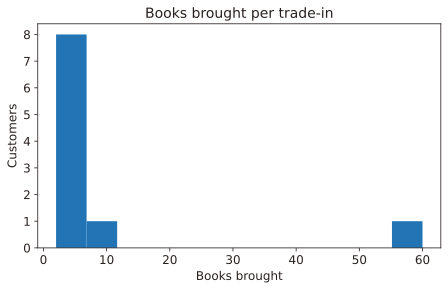
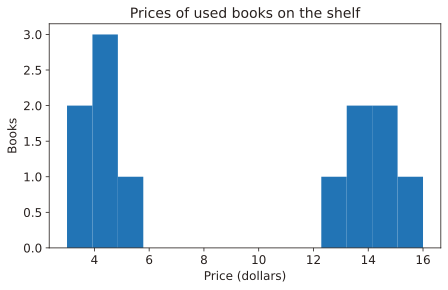

Skills you'll practice in this reading:
AI Literacy — Using an AI tool thoughtfully, and being able to explain in writing what it got right, what it missed, and how you verified its answer.
Data Distributions & Shape — Reading the shape of a real distribution (skew, outliers, spread) across multiple variables and matching it to the right chart or summary.
Already started this reading? If you saved a JSON file from a previous visit, upload it here to pick up right where you left off.
Your goal: check an AI's description of your chart, and an AI's chart idea, against numbers you computed yourself. The person who shares a result is responsible for it, not the tool. You already know mean vs. median and how to pick a chart type.
Key terms for this reading
These are the words this reading uses. Flip a card to see what a word means. Each one comes up again below with an example.
1. Quick recall
Two skills you already have come up in this reading.
Recall: you want to see the shape of one number column: where most values sit and how far they spread. Which chart fits?
Recall: one value in a column is much bigger than all the rest. Which number does it pull up more?
2. Save the chart, and get your own numbers first
Each row of tradeins.csv is one customer's trade-in, with how many books they brought.
Before you read any AI answer, compute the numbers that can settle it. Otherwise the check has nothing to stand on.
New in this cell: .describe()[["mean", "50%"]] picks two rows of describe(). The "50%" row is the median. .plot.hist(bins=12) draws a histogram with 12 bars. plt.savefig("tradeins_hist.png", dpi=150) saves the chart as an image file. It must come before plt.show(). After show, you save a blank image.
Predict: which will be bigger, the mean or the median (50%)?
import pandas as pd
import matplotlib.pyplot as plt
trades = pd.read_csv("tradeins.csv")
print(trades["books_brought"].describe()[["mean", "50%"]])
trades["books_brought"].plot.hist(bins=12)
plt.title("Books brought per trade-in")
plt.xlabel("Books brought")
plt.ylabel("Customers")
plt.savefig("tradeins_hist.png", dpi=150)
plt.show()
mean 9.9 50% 4.5 Name: books_brought, dtype: float64

This column is right-skewed: most values are small, with a long tail to the right. A mean far above the median is the fastest sign of skew. Here the typical trade-in is the median, 4.5 books. Report that, and mention the 60-book trade-in on its own.
3. Direction 1: does the AI's read match the chart?
AI critique means checking an AI's chart description or chart suggestion against the real numbers before you trust it. It goes two ways. In Direction 1, the AI describes a chart you made, and you check whether its read matches the real chart.
- Open a fresh chat and share just the saved image. Keep the CSV and its rows out of the chat.
- Ask a plain question that doesn't hint at the answer: "What does this chart show? How are the values spread out, and about how many books does one customer bring?"
- Paste the reply word for word. Then split it into separate claims: single statements you can check.
AI reply: "The data looks roughly symmetric, centered around 10 books. The mean, about 10, is a good typical number for one trade-in."
Check each claim against cell 1. What is your verdict?
4. When the averages land in a gap
Devon also charts the prices of books on the shelf.
Predict: look at the prices. Where will the mean and median land?
books = pd.read_csv("books.csv")
print(books["price"].describe()[["mean", "50%"]])
books["price"].plot.hist(bins=14)
plt.title("Prices of used books on the shelf")
plt.xlabel("Price (dollars)")
plt.ylabel("Books")
plt.savefig("price_hist.png", dpi=150)
plt.show()
mean 9.166667 50% 9.000000 Name: price, dtype: float64

The histogram has two peaks. When the mean and median sit close together, it does not mean the data has one hump. Always look at the chart too. A summary number that lands where almost no data sits is a warning sign: the rows may be two groups mixed together. Group by the column that might split them.
books.groupby("format")["price"].mean().round(2)
format hardcover 14.50 paperback 3.83 Name: price, dtype: float64
Devon uploads price_hist.png to a new chat with the same plain question. The AI replies:
AI reply: "The mean price is about $9. The mean and median are close. The prices are fairly symmetric, with one hump in the middle. So $9 is a typical price for a book here. Most books on the shelf are in good condition."
A claim is unverifiable when nothing you computed can settle it. Sort each claim. Then press the self-check button.
Right
Wrong
Unverifiable
The AI was partly right. Catching one wrong claim doesn't make the rest wrong. Each claim gets its own check.
5. Direction 2: does the AI's chart idea fit?
In Direction 2, the AI suggests a chart, and you check whether the suggestion fits the question and the data. Judge it on two counts: the chart type, and whether its claims match your numbers. Devon asks: "Which chart should I use to see how these book prices are spread out? Explain your pick, and skip the code." The AI replies:
AI reply: "Make a bar chart with one bar for every book's price, so you can see each price. Hardcovers cost about twice as much as paperbacks."
Judge the AI's idea on both counts: the chart type, and the price claim. Use cell 3. What is your verdict?
6. Wrap-up
- Compute your own numbers first. Save the chart with
plt.savefigbeforeplt.show(), and upload only the image. - Split an AI reply into claims. Mark each right, wrong, or unverifiable, and name the number that settles it.
- Judge an AI's chart idea on chart type and on whether its claims match your numbers.
New situation: next month's trade-ins have a mean of 6.1 and a median of 5.9. The histogram shows one hump with no long tail. An AI says: "Roughly symmetric. The mean is a fine typical number." What do you do?
In interviews, "How would you check an AI-made chart summary before trusting it?" is a common question. A strong answer names the claim, the number you checked it with, and your verdict.
The same habit applies to code an AI writes for you: run it, and compare its numbers with ones you computed.
7. Reflection
- Rewrite the AI's chart idea from Direction 2 with this frame: "Draw a ___ of ___, because the question is about ___."
- Add one sentence on what Devon could wrongly believe from the AI's bar chart.
Why: a rewrite that names a chart type and a reason turns a weak idea into one someone can use.
Stuck?
Go further (optional): mean, median, and shape
This video is optional and is not counted in the time estimate. As you watch, notice when the speaker says the mean and median split apart, and what a chart with two peaks does to them.
Watch on YouTubeAdditional resources
Not counted in the time estimate above.
- matplotlib docs: savefig: every option for saving a chart as an image.
- pandas docs: Series.describe: what each row of
describe()means. - Data to Viz: Caveats: common chart mistakes to look for, in an AI's chart or your own.
Your score & keep a copy of your work
Keep it in your own GitHub repo (optional, for your streak/portfolio): the Download JSON button above saves the file into your computer's Downloads folder. Here's how to move it into a repo of your own.
Step 1: Make a repo on your GitHub account (one time only — collapse this afterward)
- On GitHub, click the + in the top-right corner, then New repository.
- Give it a name (something like
data-analytics-readings) and click Create repository. - On the new repo's page, click the green Code button and copy the HTTPS URL.
- In your terminal, clone it to your computer, pasting in the URL you just copied:
git clone https://github.com/YOUR-USERNAME/YOUR-REPO.git
You only do this once. For every reading after this one, start at Step 2.
Step 2: Save this reading's file into that repo (do this for every reading):
- Move into your repo folder:
cd YOUR-REPO
- Move the file you just downloaded out of
Downloadsand into that folder:mv ~/Downloads/ai-two-sets-of-eyes-reading.json .
- Save it to git and push it up to GitHub:
git add ai-two-sets-of-eyes-reading.json git commit -m "Complete two sets of eyes reading" git push
Submit for credit: this opens a pre-filled GitHub Issue in your own private submission repo. Only you and your instructor can ever see it. You get 4 submission attempts per reading; your best score counts.
First time submitting? Set up your private submission repo (one-time)
- Go to the DA-Reading_Submissions template and click "Use this template" to create your own copy.
- On the create page, set the visibility to Private. It defaults to Public, so you have to change it yourself.
- In your new repo: open Settings, then Collaborators, then Add people, and add your instructor's GitHub username so they can see your scores. Your instructor will share their username with you.
- Copy your repo's name exactly as it appears in GitHub's URL, including any hyphens, underscores, and capitalization. Paste it into the "Your submissions repo name" box below, along with your GitHub username, then click Submit for credit.
Clicking "Submit for credit" opens a new tab with your answers pre-filled into a GitHub Issue. You still need to click "Submit new issue" on that page yourself to actually finish submitting.
Getting a "404" page instead? Two usual causes: the repo name you typed doesn't exactly match the real one (check for a stray hyphen or different capitalization), or you're not signed in to GitHub as the account that owns the repo — a private repo looks like a 404 to anyone who isn't signed in to it.